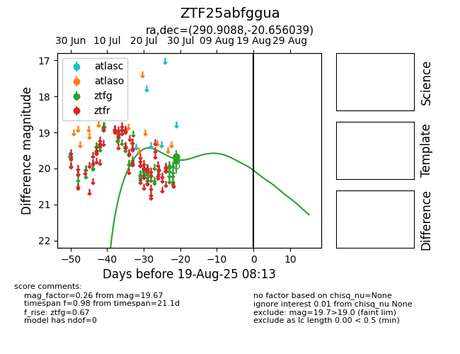

Target ZTF25abfggua at 2025-08-19 09:59, see:
FINK: fink-portal.org/ZTF25abfggua
Lasair: lasair-ztf.lsst.ac.uk/objects/ZTF25abfggua
ALeRCE: alerce.online/object/ZTF25abfggua
alt names
ZTF25abfggua (ztf,fink)
coordinates:
equatorial (ra, dec) = (290.9088,-20.65604)
galactic (l, b) = (17.5891,-16.10878)
photometry
last ztfg=19.67
4 ztfg detections
